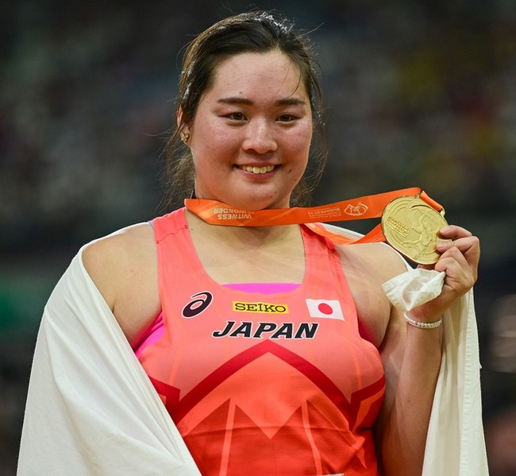

陸上競技
•
陸上 / 女子やり投
きたぐち はるか
北口 榛花
Haruka Kitaguchi
🏢 所属: JAL
🏅 パリ2024金メダル🏅 ブダペスト世界陸上金メダル🏅 日本記録保持者
世界を魅了するビッグスマイルと土壇場の逆転スロー！世界の頂点に君臨するやり投女王
経歴・これまでの歩み
幼少期からバドミントンや競泳に親しみ、旭川東高校入学後にやり投を開始。わずか2カ月でインターハイ出場を果たし、高校2年で世界ユース選手権優勝。日本大学を経て単身チェコへ渡り、世界的名コーチのデイビッド・セケラック氏に師事。2023年ブダペスト世界陸上、2024年パリ五輪で日本女子フィールド種目史上初となる金メダルを獲得した。愛らしい笑顔とカステラを食べる姿でも国民的人気を集める。
主要大会ハイライト戦績
2024年
パリオリンピック
金メダル（65m80）
2023年
ブダペスト世界陸上
金メダル（66m73）
2023年
DLファイナル
日本人初優勝（67m38 日本新記録）
2022年
オレゴン世界陸上
銅メダル（女子投擲種目日本初）
プレイスタイル＆世界を制する武器
卓越した柔軟性と下半身のパワーを余すところなく槍に伝える、しなやかな投擲フォームが最大の強み。特に試合終盤（4〜6投目）での驚異的な集中力と勝負強さは世界随一。助走スピードとブロック足の鋭い制動が巨大な推進力を生み出します。
愛知・名古屋2026への決意とメッセージ
大会スケジュール＆観戦のツボ
🗓️ 出場予定日程・会場
2026年9月28日 予選 / 9月30日 決勝（パロマ瑞穂スタジアム）
👀 観戦の注目ポイント
やり投は槍が放たれた瞬間の初速と美しい放物線、そしてスタジアムに響き渡る手拍子が見どころ。最終6投目での大逆転劇を幾度となく演じてきた北口選手のドラマチックな展開に注目です。